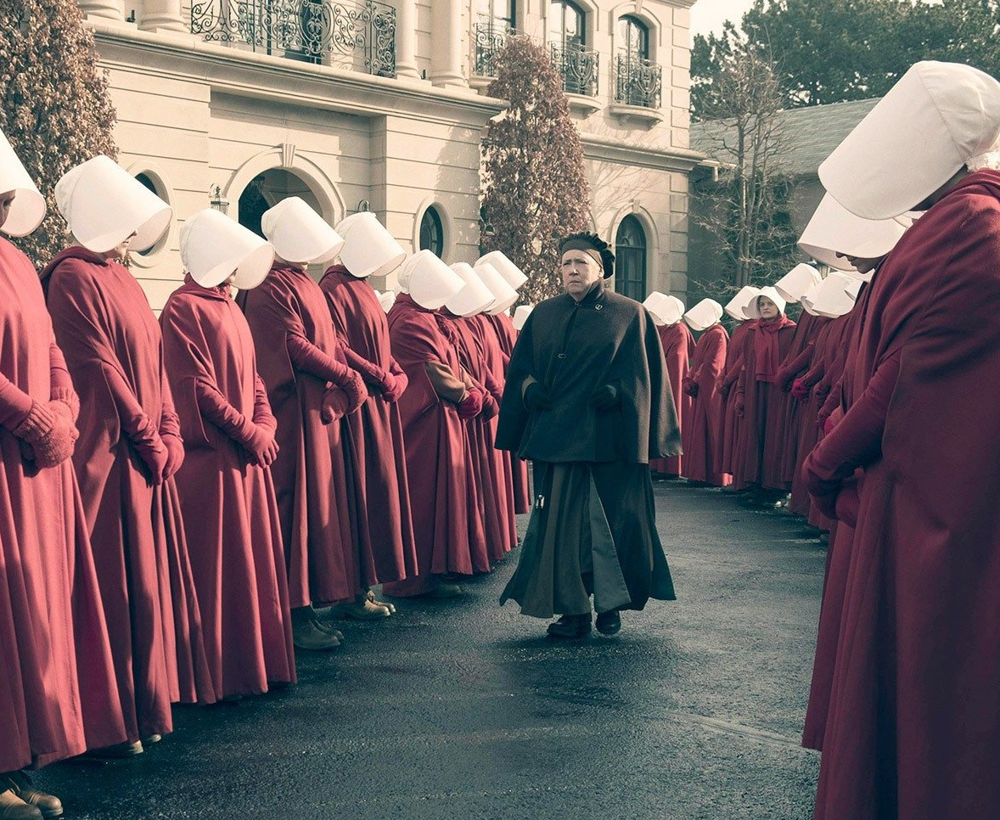
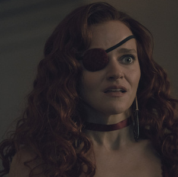
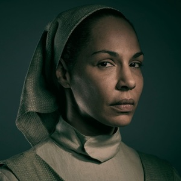
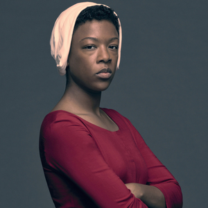

El Cuento De La Criada
Nolite te bastardes
carborundorum
Sobre la serie
Una historia
sobre el poder,
la fe y la resistencia
El Cuento de la Criada es una obra que explora temas de opresión y lucha por la libertad en un mundo distópico. Sigue la historia de June Osborne, una mujer que lucha por sobrevivir y reencontrarse con su hija.

Personajes Destacados
La voz de la Resistencia
June Osborne
Luke Bankole

Janine Lindo

Rita Blue
